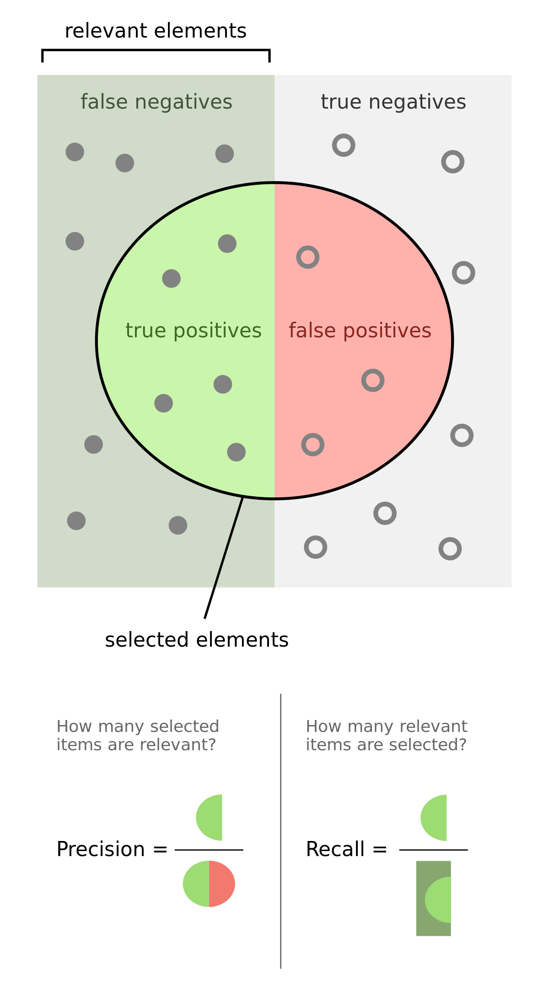

2 Data Stewarship - Fundamental Concepts
Introduction
Library and Information Science (LIS) is a field that is concerned primarily with organizing, providing access to, and structuring information for effective use. In some cases this will mean working directly with people seeking information, and in other cases it will involve applying standards for the efficient discovery of information. As a data steward working in the public sector it will be helpful to first gain a working knowledge of these concepts from LIS, and then how to apply these in a public sector data context. We will first review metadata and knowledge organization practices more generally. Then, we will look at the concept of a data management plan and how these DMPs can be useful in a public sector setting. Then, we’ll discuss the concept of a data interview that can be used to meaningfully interact with customers that are seeking data.
2.1 Metadata
Metadata is often described as “data about data” - in some ways this is true, but this simple definition tends to obscure as much as it reveals about the important of data documentation.
Metadata is most simply a set of standardized attribute-value pairs that provide contextual information about an object or artifact playing the role of Data. In the following sections we will try to unpack concepts like attributes and values, and how they relate to descriptions of data. Perhaps the best way to do this is introducing some features of metadata as it is typically used to organize, describe, and provide supplementary information about data. These features (such as class, sub-class, attribute, or instance) can apply to data at various levels of “granularity” or the level of specificity that goes from general (e.g a type of data) to concrete example (e.g. a dataset that lives on your harddrive and has the exact tittle mydata101.csv). Here are features that are consistent across most metadata applications:
Classes are the broadest concept in metadata applications. A class is used to categorize or identify featuers that can be used for a domain of objects. By domain here means something like an area of application, a group of users, or even a set of intended customers. For example a class of alchoholic drinks might be Wine. Classes can be further refined by sub-classes, which are made up of instances, properties, and values (or attributes of an instance).
Sub-classes refine a class. A sub-class can be a more specific example of a class. Returning to our wine example, a sub-class of wines might be red, white, or rosé. Another sub-class could divide wines into sparkling or non-sparkling. Another sub-class could refine wine by their vintage, country of orgin, or even the blend of grapes used to make a wine (Cabarnet, Sauvigon Blanc, Malbec, ect) The point is that a sub-class provides some way to divide or simplify the class that belongs to a domain. In the context of data stewardship, sub-classes aren’t necessarily correct or incorrect - they simply help structure metadata about digital objects so that they can be more easily and accurately described. We judge class and sub-classes of metadata based not on their correctness, but based on their utility - How well they help describe, simplify, and retrieve data. For example, if we have class of data called “Customer” and a sub-class called “Female Customers” we’ve likely created some distinction based on gender identity. Will this be a useful way to retrieve data for customers? Maybe, but the retrieval of data based on gender is likely too narrow of a use to be a reliable way to create a sub-class for all Customer data. Instead, we might create sub-classes like “Customer-Demographics” which is more general and likely solves use cases where any kind of analysis can make use of customer identities (e.g. height, weight, education, geneder identity, religoion, reported race, etc)
Instances are observations or concrete examples of a class or sub-class. Returning to our wine, the class of Red Wines has a sub-class called Malbec. An instance of Malbec would be a bottle that was available for puchase - such as a Catena Malbec. A class or sub-class instance also has attributes or properties that further refine the object and specificy why it is a member of that class or sub-class.
Attributes are defining features of a class or sub-class, and refer to instances. An instance is a member of a class if it has all of the attributes of that class. For example, a Mammal has certain features (reproductive organs, respiratory system, etc) that define its base or necessary attributes for class membership. Canines as a sub-class have a more specific set of attributes that define membership in that sub-class. Returning to our wine example, a Cantena Malbec is a Malbec, and a Red Wine if and only if it has all the attributes that are used to define a Malbec AND Red wine hold true.
Relations are the ways that we relate different instances and classes to one another. An instance or a class can be related in one or many ways.
These different features of metadata are known as semantic features. That is, classes and attributes define the meaning of and relationships between data as individual items or records and collections of items and records. Another distinction in metadata is known as syntax or the features that structure or govern a particular application of semantic metadata features. The simplest way to understand metadata syntax is, similar to data, through how a metadata record is structured (or unstructured) and how the metadata conforms to a standard.
Metadata Structures The structure of a particular metadata record will often be either formal or informal and this means that, like data, we can think of there being structured metadata and unstructured metadata syntaxes.
Structured metadata is quite literally a structure of attribute and value pairs that are defined by a scheme. Most often, structured metadata is encoded in a machine readable format like XML or JSON. Crucially, structured metadata is compliant with and adheres to a standard that has defined attributes - such as Dublin Core, EML, DDI.
Metadata Schemas are used in structured metadata to define sematnics, such as attributes (e.g. what do you mean by “creator” in ecology?); suggest controls of values (e.g. dates = MM-DD-YYYY); define requirements for being “well-formed” (e.g. what fields are required for an implementation of the standard); and, provide example use cases that are satisfied by the standard.
Structured metadata is, typically, differentiated by its documentation role.
- Descriptive Metadata: Tells us about objects, their creation, and the context in which they were created (e.g. Title, Author, Date)
- Technical Metadata: Tells us about the context of the data collection (e.g. the Instrument, Computer, Algorithm, or some other tool that was used in the processing or collection of the data)
- Administrative Metadata: Tell us about the management of that data (e.g. Rights statements, Licenses, Copyrights, Institutions charged with preservation, etc.)
Unstructured Metadata is meant to provide contextual information that is Human Readable. Unstructured metadata often takes the form of contextual information that records and makes clear how data were generated, how data were coded by creators, and relevant concerns that should be acknowledged in reusing these digital objects. Unstructured metadata includes things like codebooks, readme files, or even an informal data dictionary. A further important distinction about metadata is that it can be applied to both individual items, or collections or groups of related items. This is known as the difference between Item level or Collection level metadata.
Metadata Standards
Metadata standards are based on broad community agreement about what is essential to record and communicate to stakeholders about a set of data. A metadata standard includes clear and unambiguous definitions of what attributes are, and what the accepted values are for any attribute. The total collection of attributes that make up a standard are often called a “schema” or “core elements” - for example one of the most broadly used metadata standards for image resources is ExIF or the Extensible Interchange Format - If you have ever taken a picture with your phone and later uploaded it to a computer the metadata captured by your phone’s camera is based on ExIF - this allows any device to see attributes such as the date, time, camera model, or geolocation of where an image was taken. ExIF includes a mix of both descriptive and technical metadata attributes. Dublin Core is another metadata standard that is used broadly for describing images, web-resources, documents, and other multimedia, including data. The Dublin Core is made up of 15 essential attributes that must be recorded and stored alongside any object. Each attribute (or term) in Dublin Core is defined by a standards making body that provides guidance on how attributes are to be used in describing a resource https://www.dublincore.org/specifications/dublin-core/dcmi-terms/ An example of the attributes of a metadata record following the Dublin Core standard can be found below:
| Attribute | Definition |
|---|---|
| Title | A name given to the resource, either supplied by the individual assigning metadata or from the object |
| Creator | Entity responsible for making the resource. |
| Subject | The topic of the resource, typically represented using keywords. |
| Description | An account of the resource. |
| Publisher | An entity responsible for making the resource available. |
| Contributor | An entity responsible for making contributions to the resource (e.g. editor, transcriber, illustrator). |
| Coverage | The spatial or temporal topic of the resource. |
| Date | A point or period of time associated with the resource. |
| Type | The nature or genre of the resource. For a list of possible types, visit the DCMI Type Vocabulary. |
| Format | The file format, physical medium, or dimensions of the resource. |
| Rights | Information about rights held over the resource. |
| Source | A related resource from which the described resource is derived. |
| Language | Language(s) of the resource. |
| Relation | A related resource. For a list of possible relations, visit the Summary Refinement and Scheme Table. |
| Identifier | A unique reference to the resource. |
There are thousands of metadata standards that have been developed to record descriptive, technical, and administrative information about data. Each of these standards differs based on the type of data that is being described, and the organizational context of data customers. Choosing or selecting the right metadata standard is typically a data governance issue rather than an individual choice. However, there are some general guidelines that can be helpful for selecting and applying a metadata standard where one does not yet exist:
- Purpose: Will the metadata be used to record descriptive, technical or administrative information about data? (It could include all three)
- Creation: At what point in the data lifecycle will metadata be created? This decision will also drive who is responsible for creating the metadata. If a data collector is also charged with creating metadata then as a data steward your role might be to validate or confirm that metadata standards are applied correctly ( the next chapter provides guidance for checking metadata quality)
- Data types and role: Determining the type of data that is being collected can be the first and often most important aspect of selecting a metadata standard. Image, text, or numeric data all have different controlled standards that might be relevant to selecting a standard. Recording the roles and types of data in advance of choosing a standard will often times help reduce the decision.
- Consult a Metadata Catalogue: Lists of metadata standards can be found across the web - these will help to narrow the selection of a particular standard to meet the needs of data types and roles.
Some examples of metadata catalogues include: - The Research Data Allliance’s Metadata Standards Catalogue https://rd-alliance.github.io/metadata-directory/
Resources and Further Reading
- USGS has a helpful sheet on metadata standard selection https://prd-wret.s3-us-west-2.amazonaws.com/assets/palladium/production/atoms/files/MetadataQuestionnaire_508compliant.pdf
- DataOne has a helpful guide for selecting and applying metadata standards https://old.dataone.org/best-practices/identify-and-use-relevant-metadata-standards
- Data.gov’s standards DCAT and Project Open Metadata are helpful resources for public entity metadata https://resources.data.gov/categories/data-standards/
2.2 Data Documentation
In addition to metadata there are a number of other forms of ‘documentation’ that can be valuable for stakeholders of data or a data collection. These include: Data Dictionaries, Readme files, and codebooks.
README files provide narrative explanation of what a dataset contains, how it was produced, and how it can or should be used. Readme files are really just a narrative for the data - they provide a way for data to be described informally for stakeholders. Below are some examples and resources for creating a readme file for data documentation.
- A standard for ReadME files
- Some advice on creating readme files for data and data collections
- A template for creating readme files for data
Data Dictionaries define the variables and values of a dataset (and constraints on the values of those variables). Most often this takes the form of a table - where data values are explained with a clear definition and the value that data should take (e.g. a number, text string, etc). Data dictionaries typically contain four elements:
- Variable labels - this provides the name of the variable as it appears in the dataset that a client or stakeholder will download
- Variable definitions - this explains what the variable is meant to record or measure. The definition should use plain language - informing the client what the data is meant to represent. Often times this is hard to determine - so if you are creating a new data dictionary you may have to guess what exactly the variable means.
- Variable value types - this can typically be a description such as date, a number (or integer) or a text string. The point of defining a variable value is to tell a potential user what type of data they should expect to see in a dataset.
- Allowed Values (this could include the Type of value (e.g. string, dateTime) or the Control on that Value (e.g. Postal Codes from the USPS). Value constraints - or allowed values - are extremely important to document because they help a user understand why 05-21-2021 is not just a random assortment of numbers, but in fact follows a standard convention for representing a date (MM-DD-YYYY)
Data dictionaries can be a little overwhelming to think about initially, but there are a number of valualbe resources to consult when getting started with this form of data documentaiton: - Here is an excellent example of a simple data dictionary - And a simple introduction to creating data dictionaries
**CodeBooks* are more formal documentation that is often created for statistical or quantitative data. A codebook defines how data were coded, and how those codes were created in order to analyze, or summarize a dataset. Codebooks are often very helpful if a dataset contains a number of non standard data values or variables.
2.3 Data Management And Data Management Plans
Data management is simply defined as the active and ongoing stewardship of data throughout a lifecycle of use, including its reuse in unanticipated contexts. A lifecycle of data can include the planning for data collection, the collecting of data, the creation of documentation about data, the storage of data,the services that help clients find and use data, and the long-term preservation of data.
Data management is active - that is, it requires purposeful interactions with both data creators and data users, as well as stewardship of the data itself (cleaning, applying standards, updating data, etc).
Simply - we can think of data in an organizational context as having three layers: The data itself, the documentation (which we discussed above) and its storage. We will discuss storage in depth in the final chapter of this book. For now, its good to have a working mental model of what data management applies to - all three layers of the organizational context in which data are collected, described, and stored.
In the definition of data management I referred to what might seem like a complex “lifecycle” of data. A lifecycle model is meant to be a conceptual model that spells out, broadly, the different stages that data might go through and the various people that will be involved in each stage. A lifecyle model doesn’t necessarily have a clear start or finishing point - the idea is that data might move through or “cycle” through each of these stages. As data stewards there is an important role to play each stage of the lifecycle - At the point of collection all the way through to the preservation or destruction of data. Below is a helpful depiction of the most basic stages of a data management lifecycle.
 ## Data Management Plan
A data management plan (DMP) is a written document that describes how data will be managed at each stage of a data lifecycle. As a data steward serving internal DOL stakeholders this might include asking a client how do you expect to acquire or generate during the course of a project, how will you manage, describe, analyze, and store those data during the project, and what mechanisms will you use at the end of your project to share and preserve your data? DMPs are created by data producers with consultation of data stewards. Ideally a DMP is created before data collection begins, but oftentimes it is necessary to develop data management plans during or even at the conclusion of a project. Although an ideal data management plan documents each stage in the lifecycle above, it must include at least four elements:
## Data Management Plan
A data management plan (DMP) is a written document that describes how data will be managed at each stage of a data lifecycle. As a data steward serving internal DOL stakeholders this might include asking a client how do you expect to acquire or generate during the course of a project, how will you manage, describe, analyze, and store those data during the project, and what mechanisms will you use at the end of your project to share and preserve your data? DMPs are created by data producers with consultation of data stewards. Ideally a DMP is created before data collection begins, but oftentimes it is necessary to develop data management plans during or even at the conclusion of a project. Although an ideal data management plan documents each stage in the lifecycle above, it must include at least four elements:
- Data Types: What types of data are being created, collected, and how should they be preserved
- Data Roles: Who might use the data, and how might those needs change over time?
- Data Documentation: What types of metadata standards are appropriate? What kinds of other documentation might also be useful?
- Data Quality: Should data be cleaned or quality checked before being stored?
There is a wealth of support for data management planning on the web: - The DMPTool provides interactive templates for creating standards compliant DMPs - Stanford University’s Library has a very thorough overview of DMPs for research and public use - USGS has an excellent guide on federal agency DMPs
2.4 Data Interviews
Traditional to LIS is the idea of an information (or data) interview - that is, when people seek information what kinds of mental models do they use to structure a question, how do they translate that question into a query for information in a database, and what types of techniques are helpful for reformulating a query to actually answer their question (not just what the information system returns from a query).
Behind all information interviews - whether it is between people or between people and an information system - are “mental models.” A mental model is a simple working assumption about how a domain should work. For example, we have a simple working model of a vending machine - We enter money, we select an item, and the machine delivers our selected item. This mental model breaks down if what we expect is not what is returned. If we put in a dollar, select ‘Diet Coke’ and receive a Sprite - something went wrong. Did we press the wrong button? Was the Diet Coke mislabeled? When our mental model doesn’t match reality we often have to diagnose the problem to understand what went wrong.
Data interviews are not so different than a vending machine in terms of the basic steps used to retrieve an item (input and delivery), but our satisfaction with retrieved items are often much more complicated.
In data interviews - where a user is seeking a piece of structured information about a topic - the mental model we often use is related to information retrieval. We pose a query to an information system and expect to get results back that are relevant to that query. The relevance of a query might be judged either by recall or precision.
- Recall is related to the total amount of information returned - Did we retrieve all the information or data that a system had relevant to our query?
- Precision is about the accuracy of the returned results - Did the information system give us back a subset of the relevant information that is most useful to our query? (see Figure 1 for a visual example)

Recall and precision are both useful for a data interview. Sometimes what we desire, especially in exploratory searching, is to cast a broad net and find all of the information that might exist about a topic. In this case, recall will be a helpful mental model to judge relevancy.
If, however, we want to retrieve a particular type of information (sometimes called a ‘known item’ search) than precision will be a much better model to judge whether or not an information system retrieved the item we were seeking. Knowing in advance what kind of search is being conducted, and then building a search strategy with the correct mental model in place is the key to successful data interviews.
As a data steward, it will be rare that you encounter a user who has not already done some searching and come up empty. It is much more likely that a user will come to you having been frustrated by not finding an answer to their question, or the data they expect to already exist. In a library settings these types of interviews are often called a “reference interview” and helpfully the field has evolved some of the traditional techniques to be applicable to data users or customers. The existing resources on “data reference interviews” can range from very formal - such as this worksheet used for scientific data to more simple and straightforward models for general data users. All of these approaches share some basic things in common - helping a user understand the question they are trying to answer, asking questions about what resources might accessible and what might actually be useful, and then following up with the user to ensure that they have a match between expectation and reality. Below, is a breakdown of this process into just four simple steps to follow during a data interview with a customer:
The first two steps in a data interview should be identifying the type of question being asked, and the relevancy of the expected results:
1). What question is the user trying to answer? (In other words, why does the customer want data?)
- Exploratory - Just trying to find what resources might be available and what might be useful for a project (for example)
- Known Item - There is a clear and distinguishable right answer, and the data likely exist somewhere in the institution. The customer is simply trying to find the right data to answer their question.
2). What mental model will be used to judge the relevance of data? (In other words, what model will the user
- Recall - Most likely an exploratory search is interested in finding everything that might be relevant to their search - so recall is almost always the mental model to have in mind when guiding exploratory questions
- Precision - For a customer that knows that a resource exists but they can’t locate it exactly
When interacting with a customer executing these two steps will help clarify what data is most relevant, and how that data’s relevance will be judged by the user. The next two steps are focused on actually finding data and ensuring that the data meets the customer’s needs. Its helpful to think of these steps as being about a Data Query and Evaluation
Query: What data sources are available and what is optimal query for those sources? (In other words - what are the search terms and facets for browsing that will likely yield a relevant dataset)
- A query or search strategy will always require iteration to learn and experiment with a search interface to retrieve relevant data. This is often helpful to do, initially, with a customer. For example, going to a database, looking at the available holdings and then executing some searches alongside the user to make sure the types of results match their expectations.
- Once the customer understands how to best formulate searches - its often best to let them continue experimenting and trying to find the best data source.
Evaluation: After getting a customer on the right path to finding data set up a time to check-in and an make sure they found what they were looking for, and if not what the next steps might be in their search process. Next steps might include, designing a project to collect new data, filing a records request to get information that might not be publicly available, or even directly contacting other people in the organization to help with their search.
Throughout this process - it can be helpful to create a log of the data interview. This could simply record the time, the question being asked, and the search strategy you helped devise. The log plays two important roles:
- Check-in: The log can help be an external reminder about when to re-contact a user to help evaluate their search process.
- Record of searches: The log can also help to document for yourself and other data stewards the kinds of searches that customers are executing. Over time this log will be useful in understanding changes that are necessary to a database, to data description standards, or even coming up with documentation or guidance that can answer repeated questions from customers.
A template for a basic data log might look like this simple spreadsheet
2.5 Data Licensing and Copyright
Most jurisdictions throughout the world have some provision for intellectual property rights that govern how and under what conditions information objects can be shared and reused. In the USA, most data are considered factual information that cannot be subject to a copyright claim - for example, I could not claim that information about a highway is my property and anyone who references or uses information about highways is subject to legal action based on copyright infringement (this was enshrined in law through a famous case Feist vs Rural Telephone company) . However, when data is arranged or organized in a specific way (e.g. a database) then data collectors do have some copyright protection for the intellectual effort that went into arranging and organizing the data. The copyright protections that are afforded to database creators is limited and varies (slightly) by state and municipality in the USA. Regardless of whether or not data can (or should) be subject to copyright protections, most federal, state, and municipal agencies are subject to open government or public records legislation that requires transparency and access to government information (in Washington this is codified under the Washington Public Records Act). For data, and in particular what is deemed to be non-proprietary and non-confidential data, most government agencies have been motivated to make structured information “as open as possible and as closed as is necessary” WA State has long been a leader in open government, and its longstanding open data program has been successfully organized around principles of transparency and accountability.
Regardless of the success of open government in order to truly achieve the goals of an open data program data need to be specifically licensed for use and redistribution. When data are published to an openly accessible location on the web a license acts a declaration or reference to an existing legal document that specifies how data should be accessed, used, and any limitations on redistribution. At the federal level, open data license requirements are described in the Foundations for Evidence-Based Policymaking Act of 2018. These requirements are interpreted as follows:
“Agencies must apply open licenses, in consultation with the best practices found in Project Open Data, to information as it is collected or created so that if data are made public there are no restrictions on copying, publishing, distributing, transmitting, adapting, or otherwise using the information for non-commercial or for commercial purposes.”
Common licenses used for open data include the following:
- Open Data Commons Attribution License (ODC-By) v1.0 https://opendatacommons.org/licenses/by/1-0/
- Open Data Commons Public Domain Dedication and License (PDDL) https://opendatacommons.org/licenses/pddl/1-0/
- Creative Commons Zero Public Domain Dedication (CC0), e.g. “license”:“https://creativecommons.org/publicdomain/zero/1.0/”
- Creative Commons Attribution (CC BY), e.g. “license”:“https://creativecommons.org/licenses/by/4.0/”
- Creative Commons Attribution-ShareAlike (CC BY-SA), e.g. “license”:“https://creativecommons.org/licenses/by-sa/4.0/”
- GNU Free Documentation License, e.g. “license”:“http://www.gnu.org/licenses/fdl-1.3.en.html”
All that is required for a license to be applied to data is that there is a clear and unambiguous label that states which license and version is applicable to the data (or collection of data), and where possible provides a link to the text explaining limitations implied. Despite the importance of and simplicity in licensing open data these conventions are rarely followed.
Further Reading & References
WA State Public Records Act https://www.ncsl.org/research/telecommunications-and-information-technology/state-open-data-laws-and-policies.aspx
State Open Data Laws and License Requirements https://www.ncsl.org/research/telecommunications-and-information-technology/state-open-data-laws-and-policies.aspx
Open Licenses for USA’s Open Data Program https://resources.data.gov/open-licenses/
Brief explanations of data by license type https://help.data.world/hc/en-us/articles/115006114287-Common-license-types-for-datasets
Open Data under Creative Commonshttps://creativecommons.org/about/program-areas/open-data/
Open Knowledge Foundation Guide to Open Data Licensing https://opendefinition.org/guide/data/
Some examples of licenses (and lack of licenses) in the wa.data.gov portal
Public Domain license
No License
2.6 Reproducibility and Replication through Open Data
Open data is most often lauded as a democratic principle that enables government transparency and accountability. While simply publishing and licensing data so that it is openly accessible and reusable guarantees some amount of transparency there is, almost always, a significant gap between data being accessible and data being meaningfully reusable. This gap - between access and meaningful use - is one of the the significant challenges of all data stewardship.
When data are used for analysis or policymaking (that is, they are transformed from raw inputs to some data role) there is an assumption that by having access to and license to reuse data one could reasonably arrive at the same conclusions. This is, broadly speaking, an assumption that open data facilitates reproducibility, replication, or verification. And while these terms are often used interchangeably they have slightly different meanings.
“Reproducibility” refers to instances in which the original data and computer codes are used to regenerate the results. Reproducibility in this sense should be a guarantee that if data and analytic steps are made accessible then anyone with reasonable skills could arrive at the same conclusions as the original analyst. If a customer wants to verify a report by DOL that the number of Antique Automotive transfers in 2021 was greater than 1000, then reproducibility of this claim should be as easy as pointing to a DOL Vehicle Registration dataset (e.g. https://fortress.wa.gov/dol/vsd/vsdFeeDistribution/DisplayReport.aspx?rpt=2021M05-57.csv&countBit=1) But, reproducibility is often more complicated than simply pointing at number in a dataset. Reproducibility often requires transparency in the form of openly accessible and well documented data, clear and unambiguous analytic steps, and any software or tools used to transform a raw number into a textual claim.
“Replicability” refers to instances in which an individual collects new data to arrive at the same findings as a previous study or report. Replicability implies that if one were to have a different method of data collection then the result or claim of an analysis should hold true (regardless of the data that are used). For example, if a report claims that over 60% of all highway traffic in the state of washington is by commercial vehicles then regardless of which data we use we should be able to verify that the number of vehicles on the road are commercially licensed (and that number should be approximately 60% of all vehicles). (Barbra, 2018)
The differences between replication and reproducibility are subtle but important. Reproducibility implies that a specific result can be regenerated. Replicability implies that a broad finding or claim should have veracity - that is it should be able to be “rediscovered” or hold true if the same type of data are collected and analyzed a second time.
A simple way that I think about this is through cooking:
- If I follow a recipe for making chocolate chip cookies then I should be able to use the same ingredients and the same oven settings to create multiple sheets of the same exact cookie. That is, I can reproduce a cookie many times.
- If I attend a holiday party, taste an excellent chocolate chip cookie, and ask my friend for the recipe - then (using similar ingredients and similar oven settings) I should be able to recreate the original cookie. That is, I should be able to replicate (in proximate fashion) the original cookie that I tasted.
Reproducibility and replication are often goals of stakeholders or customers that are served by government agencies. When a report or analysis is made public then there is an assumption that we can either reproduce the exact findings, or in the future replicate the claims made using new data. Many times, through a reference interview, it will become clear that the goals of a customer are to verify something they believe to be true or maybe are skeptical about the result holding up over time. Determining first if the customer goal is to regenerate or reproduce a finding, or if the customer wants to replicate a previous study can often guide the resources that are suggested, and the steps taken to serving a customer effectively.
Further Reading & References
On distinctions between verification, replication and reproducibility:
- Barba LA. arXiv, 1802.03311. 2018. [December 2018]. Terminologies for Reproducible Research. https://arxiv.org/pdf/1802.03311.
On curating or preparing data for reproducibility:
On reproducible research and replicable results (using open science principles)
- https://reproducible-analysis-workshop.readthedocs.io/en/latest/2.Transparent-Open-Research.html
- https://open-science-training-handbook.gitbook.io/book/open-science-basics/reproducible-research-and-data-analysis
- Guide for Reproducible Research — The Turing Way (the-turing-way.netlify.app)